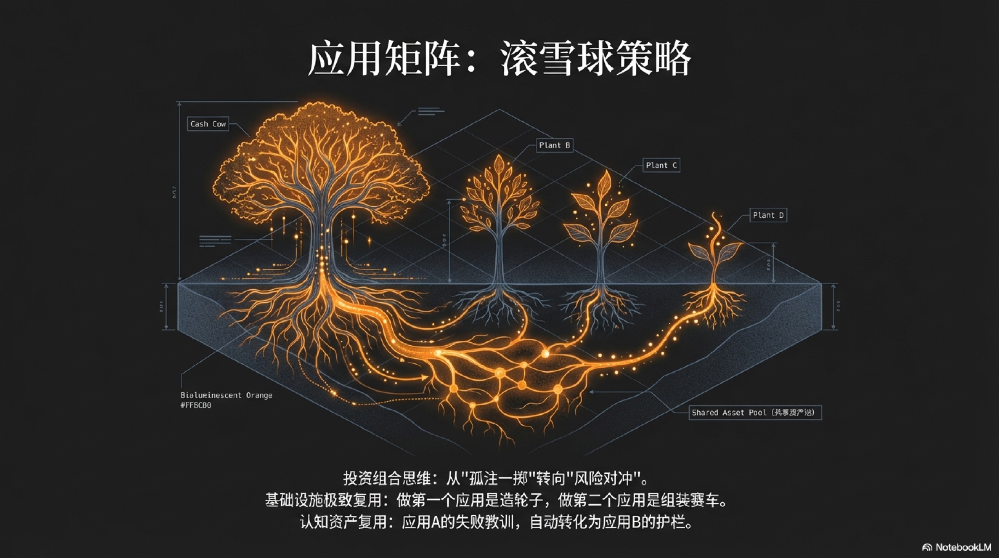

5.2 Application Matrix Strategy

In the previous section, we established the “Asset Pool” theory, reimagining the one-person enterprise as a central treasury composed of Hard, Soft, and Cognitive Assets. This solved the question of “what the enterprise has.” However, a more decisive question follows: how should we use these assets? Should we bet all resources on a “Chosen One” project like traditional entrepreneurs, or is there a smarter strategy?
The traditional startup model is essentially an “all-in” gamble. The founding team pours all their heart, time, and capital into a single product, then prays the market validates their judgment. The fragility of this model is obvious: once the market wind shifts, the technical path is falsified, or a stronger competitor appears, the entire company faces extinction. It’s like a sophisticated spaceship without a backup engine; any accident could be fatal.
AI-native enterprises offer a completely different paradigm. Since AI reduces the marginal cost of creation to near zero, we no longer need to put all our eggs in one basket. This is the core idea of the “Application Matrix Strategy”: shifting entrepreneurship from a single, high-risk “project-based” mindset to a dynamic, risk-hedged “portfolio” mindset. A one-person enterprise is no longer a product, but an “Application Factory” that continuously churns out apps. We pursue not the victory of a single battle, but the victory of the entire war.
This strategic shift requires founders to complete a profound identity switch—from a devout product believer to a rational venture capitalist.
From All-In to Portfolio: The Survival Way of One-Person Enterprises
The core logic of the Venture Capital (VC) industry is to fight future high uncertainty through broad investment. A typical VC fund invests in dozens or even hundreds of startups, knowing most will fail, but as long as one or two become “Home Runs,” the returns are enough to cover all losses.
In the AI era, founders have the opportunity to internalize this “investor mindset” into their core business philosophy. Your enterprise is no longer “one company” in a VC portfolio, but “a fund” operated by you personally. But this immediately leads to a sharp contradiction: we clearly stated in Chapter 1 that attention is the “One-Person Enterprise’s” most precious, non-renewable resource. Running multiple apps simultaneously, isn’t that a blatant violation of the “cognitive switching tax” and “attention residue” theories?
This is the core conflict between the traditional “Application Matrix” and the reality of a “One-Person Enterprise.” Large institutions (like Genesis mentioned later) can achieve a true “parallel matrix” with massive teams and capital, but for a one-person enterprise, this is tantamount to suicide. The answer lies in the modification and reconstruction of the matrix strategy, which we call the “Rolling Matrix,” or more vividly, the “Snowball Strategy.”
The core of the “Snowball Strategy” is “Serial Execution, Matrix Planning.” Your attention at any single point in time should be highly focused on one core project. But your strategic planning always maintains a diversified “application matrix” vision containing multiple potential projects.
Its operation mode is as follows:
- Focus: You devote 90% of your energy to Application A, aiming to polish it to “Product-Market Fit” or achieve stable positive cash flow. In this process, you are not just developing a product, but consciously building and settling your “asset pool”—reusable code modules, user base, brand reputation, and cognitive assets.
- Inherit & Launch: When Application A is stable (or verified as a failure), you launch Application B. The key is, Application B does not start from zero; it “inherits” the legacy of Application A. It reuses your payment channels, user account system, and most importantly—the “Cognitive Assets” learned from A’s success or failure. Fixed costs are diluted, and marginal costs decrease.
- Roll & Expand: You shift your main energy to Application B, while Application A enters a low-intensity maintenance mode. After success, you continue to launch Application C, which will inherit assets from both A and B. Your career is like a snowball getting bigger and bigger; every roll carries all the energy accumulated in the past.
This is the real way super individuals play. As we will analyze in detail later, Tony Dinh did not develop Typing Mind and Black Magic simultaneously, but stabilized one before doing the next. The essence of this strategy can be summarized in one sentence:
Do not challenge your brain with concurrent multitasking; challenge business efficiency with asset reuse. When building the first app, you are reinventing the wheel; when building the second, you are assembling a race car.
Understanding the “Snowball” model, let’s look at the power of “low-cost trial and error.” Under the “Matrix Planning” vision, you can simultaneously conceive ten “scalpel-style” micro-apps with extremely small cuts to probe real market demand:
- App A: An Agent specifically for converting academic papers (PDF) into social media thread-style summaries.
- App B: An Agent for independent developers that automatically generates App Store changelogs and promotional copy.
- … And so on, up to App J.
You can build “Probes” for these ideas in an extremely short time (e.g., a weekend) using the crudest methods (perhaps just a landing page or a simple script) to verify initial market interest. Then, based on real data feedback, you choose the most promising one as the starting point for your next “snowball,” focusing all your attention on it. This is the unification and sublimation of “Application Matrix” and “Attention Economy.”
Case Study: From Super Individual to Application Empire
The “Application Matrix Strategy” is not theoretical talk; in the real world, it has long been an “open secret” practiced on a large scale by many top developers and organizations with amazing success. From the lone “Super Individual” to the systematic “Application Empire,” this strategy demonstrates amazing scalability. The following two cases represent the ultimate embodiment of this strategy at the “individual” and “organizational” levels, respectively.
Level 1: Super Individual — Tony Dinh’s “One-Man Army”
As one of the most outstanding representatives in the Indie Hacker community, Vietnamese developer Tony Dinh has built a product matrix consisting of multiple applications single-handedly, achieving huge personal commercial success. He is the prototype closest to the reality of the “One-Person Unicorn” concept.
Tony Dinh’s philosophy is a perfect practice of the “Rolling Matrix.” On the surface, he maintains a product matrix, but his core energy input is highly focused at different stages. Through serial conquest and parallel maintenance, he built a mutually supporting, risk-diversified portfolio. By the end of 2025, his product matrix was generating over $140,000 in total monthly revenue for him 1. Let’s dissect a few key products in his matrix:
-
Home Run: Typing Mind This was a huge opportunity Tony Dinh seized in the AI wave. As an AI product providing a better interaction interface for large models like ChatGPT/Claude, Typing Mind achieved explosive success. It generated $500,000 in revenue in its first year, and by the end of 2025, its Monthly Recurring Revenue (MRR) had soared to a staggering $137,000 1 2. Typing Mind is the “Cash Cow” and “Growth Engine” in his matrix.
-
Stable Cash Flow: DevUtils & Xnapper Before Typing Mind exploded, Tony already owned two stable revenue-generating apps.
DevUtilswas his first profitable product, providing a series of common small tools for developers, contributing about $5,500 monthly.Xnapperis a powerful screenshot beautification tool, with monthly revenue maintained at $4,000-$6,000. The existence of these two apps meant that even without Typing Mind, he had a healthy financial foundation, giving him enough confidence and freedom to explore new, high-risk, high-return opportunities 3. -
Dynamic Adjustment & Exit: Black Magic
Black Magicwas a tool to enhance the Twitter experience, once reaching $14,000 in monthly revenue. However, when Twitter’s (later X) API policy changed drastically, severely affecting the product’s core function, Tony did not stubbornly persist. He clearly judged the external environmental risk and decisively sold it for $128,000. This perfectly interprets the risk hedging capability of the application matrix: the failure of one project or external risk will not destroy the entire career 4.
Tony Dinh’s success reveals how the “Application Matrix Strategy” operates at the individual level: capturing opportunities through parallel exploration, ensuring survival through risk hedging, and improving efficiency through resource reuse (personal brand, tech stack).
Level 2: Application Empire — Genesis’s “Backstage Factory”
If Tony Dinh’s success shows how the “Application Matrix” empowers super individuals, then Genesis Technology Partners from Ukraine reveals the amazing energy erupted when this model is institutionalized and systematized. Genesis is a “Venture Builder” that doesn’t invest directly but co-founds companies with entrepreneurs, providing full support from technology and marketing to analytics in exchange for company shares. They are the true “invisible tycoons” of the mobile app industry.
Genesis owns a vast application empire, including many globally renowned apps. According to estimates by business data platforms Growjo and Gameworldobserver, the monthly revenue data of some of its core products is staggering:
- BetterMe: A health and fitness app with annual revenue growing to $80 million, averaging $5 million in monthly turnover 5.
- PlantIn: A plant care app with global monthly revenue of about $900,000 6.
- Headway: A book summary app with estimated annual revenue up to $490 million 7.
These apps are just part of the Genesis empire map. Through a “backstage operation” model, they have incubated a huge application portfolio with over 400 million downloads globally. Their core model is exactly the institutionalized “Application Matrix”:
- Central Platform Support: Genesis has a powerful central platform providing core capabilities like technology, marketing, user acquisition, and data analysis to all incubated startups. This is completely consistent with our “Asset Pool” concept, greatly reducing the cost and threshold of new project launches.
- Diversified Ecosystem: Their apps cover multiple fields like health, education, tools, and media, forming an extremely diversified investment portfolio. This allows them to withstand fluctuations in any specific industry and capture new opportunities emerging in different fields.
- Expert Team Operation: Unlike the “One-Man Army,” Genesis turns every link into a professional team. They have world-class user acquisition experts, data analysts, and product managers. Their experience and lessons (i.e., “Cognitive Assets”) are shared and reused across all products in the company, forming a strong network effect.
From Tony Dinh’s one-man army to Genesis’s application empire, we see the common logic and powerful force of the “Application Matrix Strategy” at different scales. It abandons the traditional “heroic” narrative of pinning all hope on a single idea, turning to a more rational, antifragile “ecosystem” thinking. This is the core survival rule for enterprises to fight uncertainty and achieve sustainable growth in the AI era.
Infrastructure Reuse: Synergy of the Matrix
If running 10 projects simultaneously means 10 times the workload, 10 times the complexity, and 10 times the management cost, then the “Application Matrix Strategy” would be worthless, even a disaster due to the extreme dispersion of the founder’s attention. The reason this strategy is not only feasible but efficient lies in a seemingly simple but extremely powerful principle: Extreme Reuse of Infrastructure.
Every application in the matrix is not an isolated island. Although they look different and serve different markets, their “genes” all originate from the same central “Asset Pool.” It is this sharing and reuse that creates the 1+1 > 10 synergy, making the cost of running 10 projects far lower than 10 times that of running one. We can understand this fluid, collaborative reuse relationship from three levels.
1. Hard Asset Reuse: Overwhelming Economies of Scale
Admittedly, as mentioned earlier, Hard Assets (payment channels, API keys, servers, etc.) naturally have reusability. But this is not the whole story. Under the “Application Matrix” structure, this reuse is elevated to a decisive competitive advantage: Overwhelming Economies of Scale.
This is not just saving the cost of buying a few “digital keys,” but building an economic moat that independent competitors find hard to cross. Imagine an entrepreneur launching an app who needs to spend a lot of time and energy building a compliant payment system, a secure database, and a stable user account system. This is a huge, one-time fixed cost. But for the owner of an application matrix, this “digital pipeline” was already laid when the first app went live.
This means:
- Extreme Dilution of Fixed Costs: When the second app is created, this fixed cost is instantly diluted by 50%. When the tenth app is born, the infrastructure cost allocated to each app is only one-tenth of the original.
- Sharp Decrease in Marginal Costs: The marginal cost of launching the eleventh app is almost just creativity and a few API call fees. It doesn’t need to go through cumbersome engineering settings and legal compliance processes again and can complete the whole process from conception to launch in hours.
This cost structure gives every app in the matrix huge flexibility in pricing, marketing, and fault tolerance. It’s not simply “saving money,” but fundamentally changing the rules of competition.
2. Soft Asset Reuse: Self-Reinforcing Growth Flywheel
If Hard Asset reuse is about saving costs, then Soft Asset reuse is about creating growth. Products within the application matrix can form a powerful internal traffic and brand ecosystem.
- Traffic Internal Circulation: This is one of the most powerful tactics. When one of your apps (e.g., App A) succeeds through content marketing or good word-of-mouth and accumulates stable user traffic, it becomes a valuable traffic entry point. You can cross-promote your other apps on App A’s interface in an elegant and unobtrusive way. For example: “Like our article summaries? Try our new tool ‘Video Highlight Extractor’ (App D)!” The conversion rate of this internal diversion is usually far higher than external advertising because it is based on user trust in your existing product. A successful app can act like an engine, continuously delivering initial users to the entire matrix.
- Brand Umbrella Effect: As you release more apps, you can unify them under a “Brand Umbrella,” such as “AI-Go Suite” or a similar name. This will gradually build a brand perception in users’ minds that “this publisher = high-quality AI tools.” When users trust your brand, they will be more willing to try your new products and even actively follow what new things you release. This reuse of brand trust greatly shortens the cold start cycle of new products.
- Community & Relationships: You build a unified user community (such as a Discord server or email list) for all apps. This not only facilitates unified update releases and feedback collection but, more importantly, gathers users of different apps together to form a network. You can keenly capture new needs in this network, which are often the inspiration for your next hit app.
Through the reuse of Soft Assets, your application matrix is no longer a pile of loose sand, but an interconnected, mutually empowering “organism.” The value of a network grows exponentially with the increase of nodes, and so does your application matrix.
3. Cognitive Asset Reuse: Evolving Collective Intelligence
This is the deepest and most revolutionary part of the application matrix strategy. It gives the entire enterprise “collective memory” and “collective wisdom,” achieving the true meaning of “what doesn’t kill me makes me stronger.”
It turns the entire market into a giant laboratory, with dozens of “petri dishes” (apps) conducting experiments simultaneously. The experience of any success or failure is instantly refined and injected into the central “stem cell bank” (Cognitive Asset Pool), feeding back to all “petri dishes.” This speed of “parallel evolution” is incomparable to the “serial evolution” mode of a single product.
Let’s go back to the example where App B (AI Sales Email Bot) failed due to an overly aggressive style. In a traditional company, the lesson of this failure might settle in a few forms: a project manager wrote a review report no one cares about; a few participating employees mention this “accident” in chats; or, if the CEO has a good memory, they verbally remind everyone to pay attention next time. These “experiences” are fragile, scattered, and easily disappear with personnel turnover.
But in the application matrix of an AI-native enterprise, this failure is transformed into a permanent, executable Cognitive Asset.
- Check: When the system detects extremely low user retention for App B or receives a lot of negative feedback, the Evals module (as described in Section 4.4) automatically triggers a deep analysis. It might call the “Silicon-based Jury” to let multiple LLMs review those failed emails, finally reaching a conclusion: “The ‘intent’ of the email was perceived by users as ‘coercion’ rather than ‘help’.”
- Act: This conclusion doesn’t stay in a report. The PDCA evolutionary engine “compiles” it into a new rule. This rule might be a specific “constitutional clause” added to the
constitutional_prompts.mdfile in the central “Cognitive Asset Pool”: “Principle #17: In any initial communication with potential clients, the use of words with urging and oppressive tones is prohibited. Priority should be given to providing value, packaging ‘requests’ as ‘proposals’.” - Reuse: This new constitution is immediately synced to all relevant Agents in the matrix through the
fractal evolutionmechanism (as described in Section 4.5). The next time App G (an Agent for social media interaction) builds its initial Prompt, it automatically loads this principle. More importantly, when you prepare to launch a brand-new App K (e.g., an Agent for recruiting scenarios to proactively contact candidates), it “knows” from day one not to use an aggressive tone to communicate.
One “death” of App B buys an “immunity upgrade” for the entire matrix. This is the power of Cognitive Asset reuse. Failure is no longer a cost, but an investment in future success. Every user complaint, every Agent hallucination, every plummet in conversion rate is “swallowed” by the system and digested into wisdom inheritable by the entire organization.
The value of the Asset Pool is ultimately reflected here. It stores not only successful code and SOPs but, more critically, “memories of trial and error” (i.e., Check results in the PDCA cycle). The pitfalls App A fell into, App B will automatically avoid. This is the highest state of Cognitive Asset reuse: a collective brain that learns from experience and ensures the entire organization never makes the same mistake twice.
This reuse network composed of Hard, Soft, and Cognitive Assets finally depicts a clear “Application Matrix” picture:
- Rows: Your core asset pool—unified accounts, shared traffic channels, and most importantly, the constantly evolving cognitive library.
- Columns: The individual application probes you deploy in the market.
Each application is a unique call and combination of these shared assets. And your role is that of the architect standing before the console, constantly observing data, deciding which new “columns” to launch and which “rows” to optimize, thereby commanding the entire matrix to occupy future value highlands with the lowest cost and fastest speed.
-
Estimation of Tony Dinh’s total revenue comes from his public sharing on social media and independent developer communities. See “Tony Dinh’s Journey to $140k/Month with a Portfolio of Apps”, Medium, Dec 2025. Read online: https://medium.com/@anharde/how-a-solo-founder-is-making-45-000-month-from-a-portfolio-of-4-products-b5a52e15e1af ↩ ↩2
-
Typing Mind MRR data referenced from Tony Dinh’s tweet. https://x.com/tdinh_me/status/1863588725920309444 ↩
-
Revenue data for DevUtils and Xnapper referenced from Tony Dinh’s public revenue dashboard. https://news.ycombinator.com/item?id=32959826 ↩
-
Black Magic acquisition details referenced from Tony Dinh’s blog post “I sold Black Magic for $128k”. https://tonydinh.com/blackmagic ↩
-
BetterMe revenue data referenced from Growjo. https://growjo.com/company/BetterMe ↩
-
PlantIn revenue data referenced from mobile app market intelligence. ↩
-
Headway revenue estimation referenced from Gameworldobserver. https://gameworldobserver.com/2023/12/12/headway-revenue-downloads-airnow-data ↩